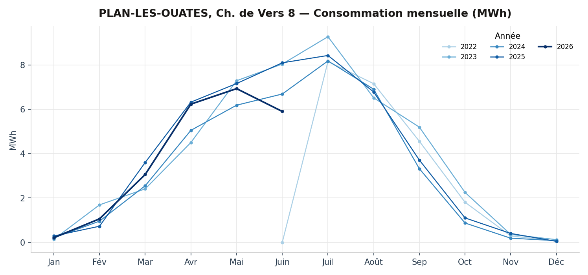
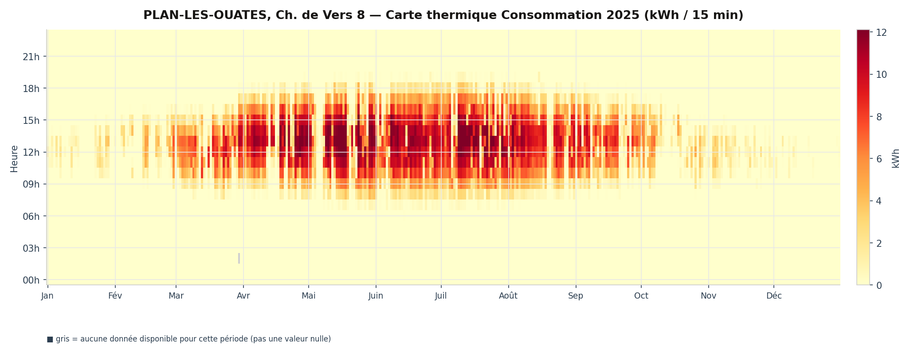
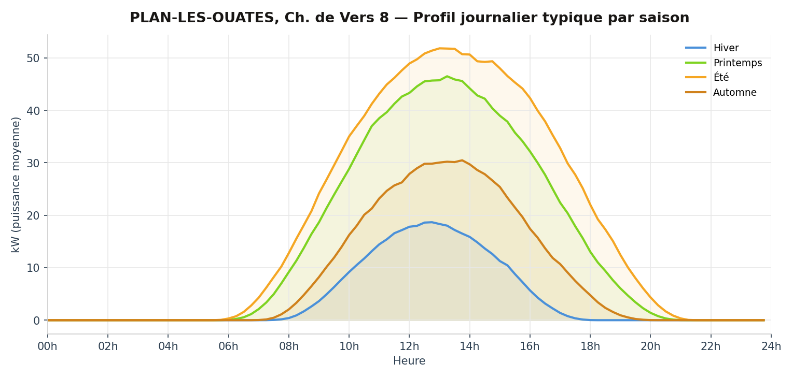
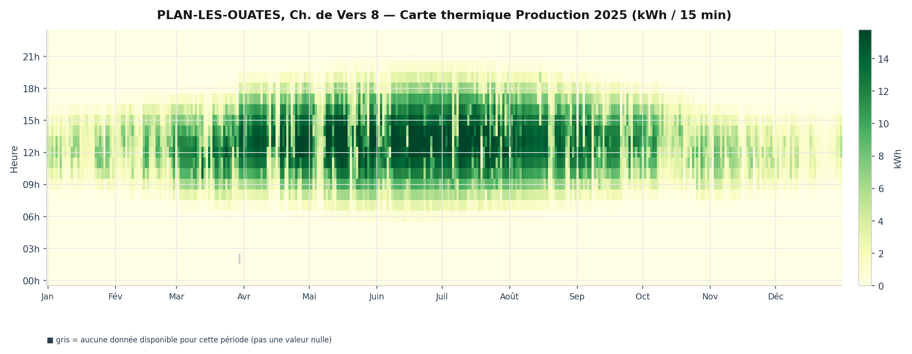

PLAN-LES-OUATES, Ch. de Vers 8
Chemin de Vers 8, 1228 Plan-les-Ouates, Suisse
Description
La coopérative Enerko a financé l'installation photovoltaïque sur la toiture du bâtiment de la commune de Plan-les-Ouates, au chemin de Vers 8. La coopérative Enerko a également monté une communauté d'autoconsommateurs au sein du bâtiment, ceci afin de maximiser l'autoconsommation de l'électricité solaire produite en toiture.
Plus de détails
L'installation PV
Cette installation se compose de 260 modules monocristallins (Bisol 375 Wc) disposés sur la toiture plate. Les modules PV sont posés en shed à 10° d'inclinaison, orientés Sud-Ouest (55°). Un onduleur Solarmax 110 SXT, positionné en toiture, transforme le courant continu en courant alternatif utilisable dans le bâtiment et compatible avec le réseau électrique. La production d'électricité solaire est estimée à environ 100'000 kWh.
Le financement
L'investissement de CHF 180'000.- est porté par la coopérative Enerko avec une subvention de la commune de Plan-les-Ouates équivalente à la rétribution unique (32'000.- CHF).
La communauté d'autoconsommateurs
Certains locataires (ménages et activités) qui le souhaitent, ainsi que les consommateurs techniques (ventilation, communs d'immeubles, etc.) sont regroupés dans une communauté d'autoconsommateurs (société simple). La coopérative Enerko est la représentante de la communauté vis-à-vis de SIG, qui s'occupe de la facturation. Enerko vend l'électricité produite aux membres de la communauté et le prix est indexé 2 centimes plus bas que le tarif SIG Vitale Bleu.
Du fait de la configuration des installations électriques, la consommation instantanée d'électricité PV est priorisée par rapport à l'électricité provenant du réseau électrique. Ce regroupement permet ainsi, selon les premières estimations, d'autoconsommer 40% de la production PV.
Données mesurées
Séries mesurées SIG au pas de 15 minutes pour cette installation — mêmes graphiques que l'explorateur de la page d'accueil.
Autoconsommation
100.0% complet (2022-06-24 → 2026-06-23)Aucun trou significatif détecté.
Évolution mensuelle

Profil journalier typique

Carte thermique

Production
100.0% complet (2022-06-24 → 2026-06-23)Aucun trou significatif détecté.
Évolution mensuelle

Profil journalier typique

Carte thermique
